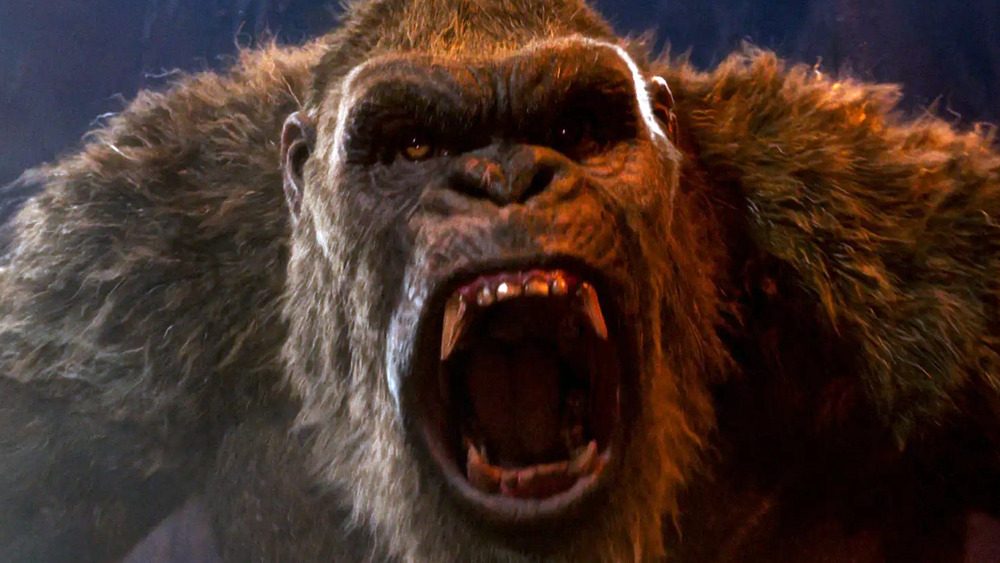
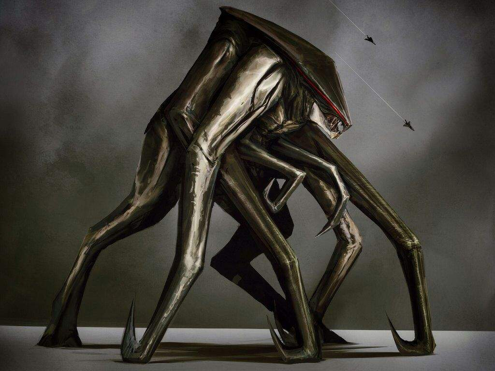
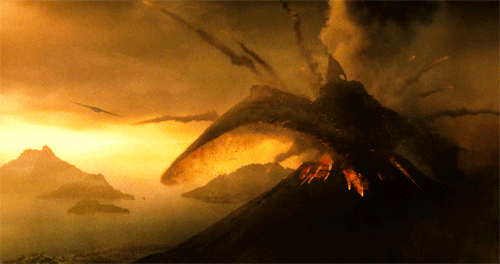

godzilla is over 252 million years old and even before him there was a another godzilla named dagon. dagon was killed by muto prime the one who gave birth to the M.U.T.O.s in 2014
shin godzilla is a.... i dont even know.
kong was a allie to humans and was the last of his kind after the war between godzillas and kongs.
the mutos or massive unidentified terestrial orginism it was a parisetic kaiju that first came to tv in 2014 in godzilla 2014 there was also i third one in godzilla king of the monsters
Rodan was a giant fire demon close to a bird and was first seen in 1956 "rodan" movie.
